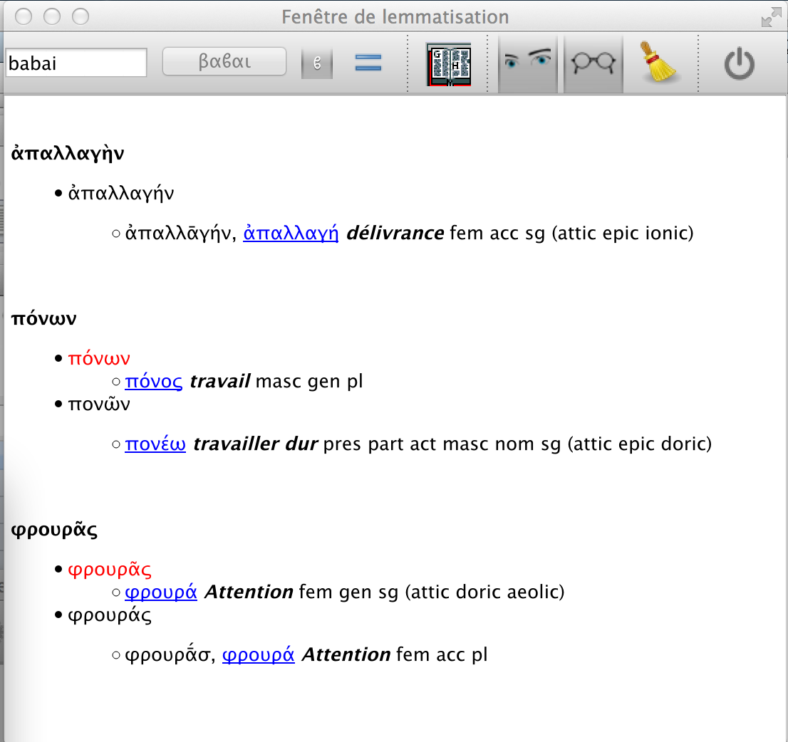
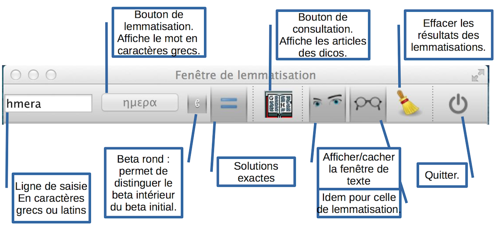

Eulexis v.1.1 – guide juin 2020
précédent : Fenêtre principale index suivant : Fenêtre de texte
Le bouton représentant une paire de lunettes permet d'afficher et de masquer la fenêtre de lemmatisation.

La lemmatisation d'une forme grecque conduit à un résultat qui ressemble à celui présenté ci-dessus. Ici, on a cliqué dans la fenêtre de texte sur les mots ἀπαλλαγὴ, πόνων et φρουρᾶς : ils apparaissent en gras, calés à gauche. Ils sont suivis d'une liste indentée des formes qui coïncident avec celle demandée, sans tenir compte des esprit, accent et iota souscrit qui s'ajoutent aux caractères de base (voir ci-dessous la discussion de l'option forme exacte). Chaque forme est suivie de la liste des lemmatisations et analyses possibles, indentée une fois de plus (ici, il n'y a qu'une analyse possible par forme, mais ce n'est pas toujours le cas). Le lemme apparaît en bleu et souligné, car il est associé à un hyperlien qui ouvre l'article correspondant dans les dictionnaires (voir la page précédente). Parfois, il est précédé de la forme elle-même dans laquelle est précisée la longueur d'une voyelle comme pour φρουρᾱ́ς. L'analyse morphologique est donnée en abrégé, mais reste compréhensible.
Remarque : le cas des formes composées est un peu particulier, car on donne la traduction du mot-racine, en laissant au lecteur le soin de démêler le sens des préfixes, parfois multiples. Pour aider les débutants, un lien est toutefois ajouté à chaque préfixe pour mener à l'article correspondant du dictionnaire.
La barre d'outils est différente de celle de la fenêtre de consultation. On retrouve, à gauche, la ligne de saisie et le bouton de lemmatisation et, à droite, les trois boutons (yeux, lunettes et quitter) que nous avions déjà dans la fenêtre de consultation. On se référera à la section précédente pour en avoir la description détaillée. On reconnaît aussi le livre ouvert qui permet de consulter les dictionnaires, les articles étant affichés dans la fenêtre principale.

Le balai sert à effacer le contenu de cette fenêtre. Cette fonction est aussi accessible avec le raccourci Ctrl-D (Cmd-D sur un Mac). Un message d'alerte est émis si le contenu de cette fenêtre a été modifié sans être sauvé (nous aurons à la page suivante une discussion de la sauvegarde). Les deux derniers boutons (beta rond et signe égal) méritent une description plus détaillée.
Beta rond Une tradition française (et également grecque, depuis au moins le 15e siècle) veut que l'on distingue le beta initial β du beta intérieur ϐ. Dans les dictionnaires, seul le β est utilisé, sauf pour le Bailly 2020. En revanche, dans la fenêtre de lemmatisation, on peut choisir de distinguer les deux beta ou pas. On remarquera, dans l'image ci-dessus, que le bouton de lemmatisation contient βαϐαι, conversion de babai en caractères grecs lorsque l'option beta rond est sélectionnée.
= (signe égal : forme exacte) Le principe de fonctionnement d'Eulexis consiste à chercher une forme sans tenir compte des accent, esprit ou iota souscrit. Les quantités (macron et breve) qui sont parfois indiquées seront ignorées également. C'est tout à fait pertinent quand le mot a été saisi en caractères latins sans accent. Toutefois, lorsque l'on lemmatise un texte en grec, les accents et les esprits sont spécifiés. On peut donc choisir la lemmatisation qui correspond à la forme du texte. Lorsque l'option forme exacte n'est pas sélectionnée, toutes les solutions possibles sont affichées. Si l'une d'elles correspond exactement à la forme grecque demandée, elle apparaîtra en début de liste et sera en rouge. Lorsque l'option forme exacte est sélectionnée, cette solution en rouge sera la seule à apparaître, si elle existe. S'il n'y a pas de solution exacte, toutes les solutions possibles seront proposées.
précédent : Fenêtre principale index suivant : Fenêtre de texte